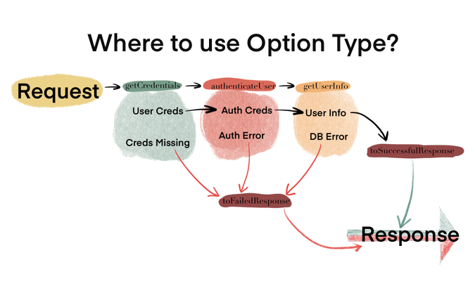
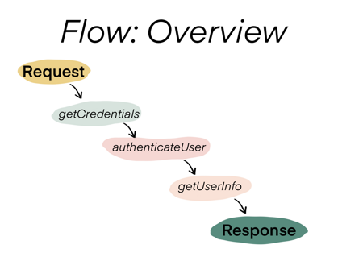
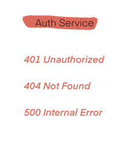
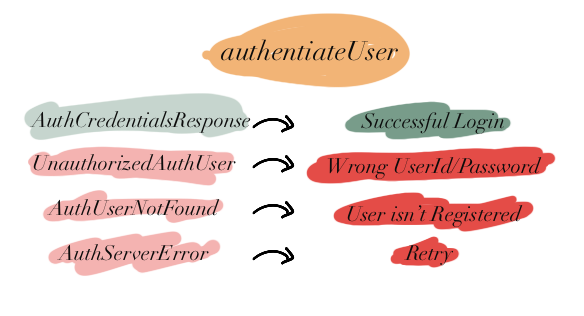
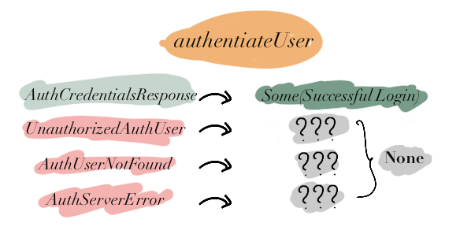
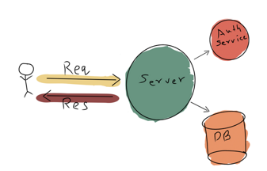

FP for Sceptics: Option Type in Practice
In previous post we defined FP & error handling
Functional Programming (FP) is based around mathematical concepts like Type Theory - We define our system in terms of ADTs, data flow & functions.
FP promotes using types for error handling
OptionEitherMonad- etc.
Previous post also explained Option type and how it works.
ADTs in Practice took a practical system1 and designed ADTs for it.
In this post, we will reuse the same system but try to figure out where Option type makes most sense to use.

Practical System Overview
Let's start by defining the flow of our system.

Defined by the code2
import cats.effect.IO class Server(http: Http, database: Database) { def process(request: Request): IO[Response] = { val respF = for { creds <- request.getCredentials() authorizedCreds <- authenticateUser(creds) userInfo <- getUserInfo(authorizedCreds) successfulResponse <- toSuccessfulResponse(userInfo) } yield successfulResponse respF.handleErrorWith(toFailedResponse) } def authenticateUser(creds: UserCredentials): IO[AuthCredentials] = ??? def getUserInfo(authCreds: AuthCredentials): IO[UserInfo] = ??? def toFailedResponse(err: Throwable): IO[Response] = ??? def toSuccessfulResponse(userInfo: UserInfo): IO[UserInfoResponse] = ??? }
Using Option type
Let's consider getUserInfo which connects to the database to retrieve UserInfo
// Database ADTs final case class UserInfoFound() extends DBResponse final case class UserInfoNotFound() extends DBResponse final case class DBError(msg: String) extends RuntimeException(msg) with DBErrorResponse
It is possible for an authenticated user to not have UserInfo3 in database.
If we look at definition of Option type
Optiontype denotes presence (Some(value)) or absence (None) of a value.4
We can see that UserInfoFound and UserInfoNotFound are two ADTs used to describe presence and absence of UserInfo.
Instead of using two different case classes which don't give us any extra useful information, we can replace them with a single Option type.
Here's what the new code would look like.
import cats.effect.IO class Server(http: Http, database: Database) { // Changed def getUserInfo(authCreds: AuthCredentials): IO[Option[UserInfo]] = ??? // toSuccessfulResponse can do a pattern match // or .getOrElse on userInfoOpt to extract // the value and convert it to UserInfoResponse def toSuccessfulResponse(userInfoOpt: Option[UserInfo]): IO[UserInfoResponse] = ??? // Unchanged def process(request: Request): IO[Response] = { val respF = for { creds <- request.getCredentials() authorizedCreds <- authenticateUser(creds) userInfo <- getUserInfo(authorizedCreds) successfulResponse <- toSuccessfulResponse(userInfo) } yield successfulResponse respF.handleErrorWith(toFailedResponse) } def authenticateUser(creds: UserCredentials): IO[AuthCredentials] = ??? def toFailedResponse(err: Throwable): IO[Response] = ??? }
When not to use Option type
A question one might ask is
Why not rewrite the complete system to use
OptionorOptionT5?
The answer revolves around understanding the granularity of our exception handling in the system.
Let's consider another component, Auth Service which has either successful or error states.

Defined by
def authenticateUser(creds: UserCredentials): IO[AuthCredentials] = ??? // Success final case class AuthCredentialsResponse( authCredentials: AuthCredentials ) extends AuthResponse // Failure final case class UnauthorizedAuthUser(msg: String) extends RuntimeException(msg: String) with AuthErrorResponse final case class AuthUserNotFound(msg: String) extends RuntimeException(msg: String) with AuthErrorResponse final case class AuthServerError(msg: String) extends RuntimeException(msg: String) with AuthErrorResponse
Here's what high granularity tells us:

If we modify authenticateUser to use Option type and stop raising erros for AuthErrorResponse ADTs.
def authenticateUser(creds: UserCredentials): IO[Option[AuthCredentials]] = ???
A lot of information is lost:

This was not an issue for getUserInfo because we used Option type to only denote presence or absence of UserInfo.
We did not use it for exception handling where having extra information can be quite vital.
Conclusion
In this post we looked at where Option type can be used in a system and more importantly, where NOT to use it.
In later posts, I will cover Either/EitherT, which is the most practical & useful type construct.
-
 ↩
-
Complete code ref can be found at Github Gist. ↩
-
Imagine a bookmark system,
UserInfocan mean list of bookmarks and hence can be empty. ↩ -
In Scala (Cats),
OptionTis a wrapper overIO[Option]to make it easier to work inIOcontext. I won't be covering it in this post but if you are curious, have a look at Cats' Official Documentation ↩